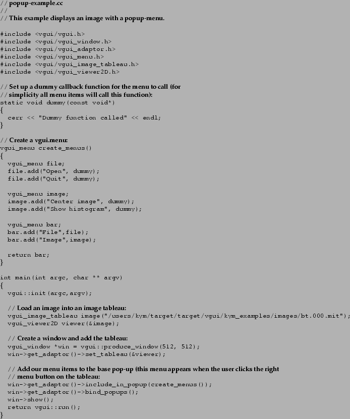

A pop-up menu is also specified by a vgui_menu. In this next example we take the same vgui_menu we used to specify the menubar, but this time we add it to a pop-up menu.

Click the right mouse button anywhere on the image to get the pop-up menu to appear. The implementation of pop-up menus in VGUI is very simple: you can only attach a menu to a tableau and the default method to get it to ``pop up'' is a right mouse click.
Other items in the pop-up menu that we didn't specify are the default items for an image tableau. You would see these items in a pop-up menu if you right clicked on any of the previous examples. If you wish to replace the default pop-up menu (instead of adding to it) then instead of include_in_popup, use the function add_popup.